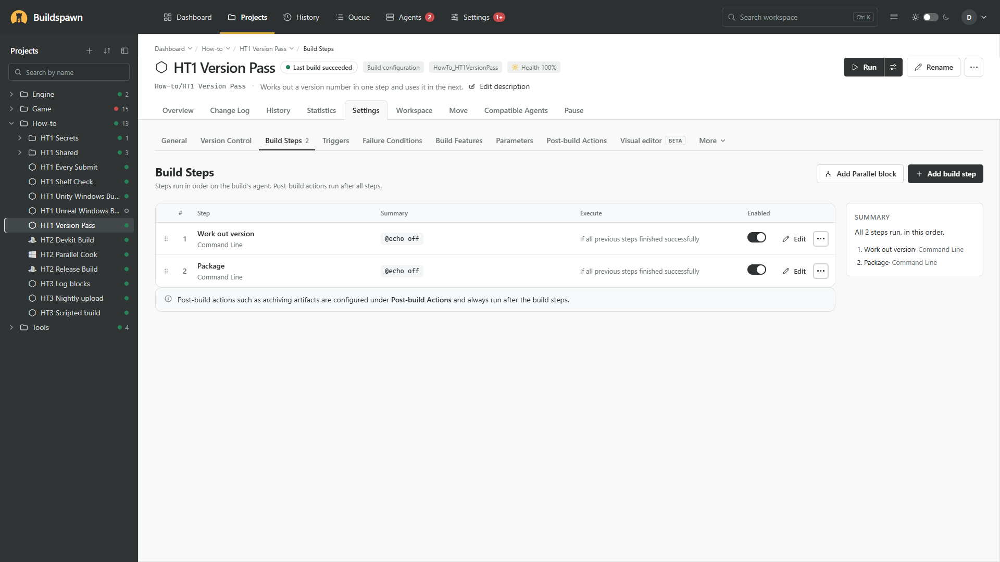
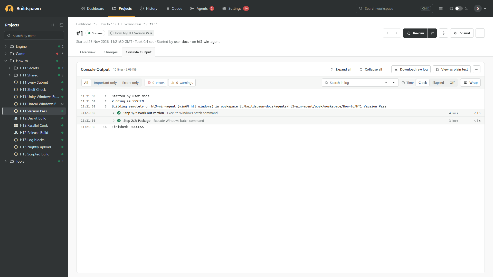

Pass a version number between steps
Work out a version number in one step and use it in the steps after it, with one ##buildspawn line.
A step passes a value on by printing a service message: a line that starts with ##buildspawn. Buildspawn reads it from the step's output and gives the value to every later step. You don't need files or extra scripts.
Before you start
- A build configuration you can edit. Here it is HT1 Version Pass in the How-to project.
- A way to work out the version: a file in your workspace, a tag, or a rule such as "1.4 plus the build number".
Steps
- Open the build configuration and go to Settings › Build Steps.
- Click Add build step, pick Command Line and name the step
Work out version. - Choose Custom script and type the script. It prints the version twice: once as a build parameter, once as an environment variable.
To read the version from a file in your workspace instead:@echo off rem Work out the version: 1.4 plus the build number. set V=1.4.%BUILD_NUMBER% echo Version is %V% echo ##buildspawn[setParameter name='version' value='%V%'] echo ##buildspawn[setParameter name='env.GAME_VERSION' value='%V%']
Click Save.for /f %%v in (Build\version.txt) do echo ##buildspawn[setParameter name='version' value='%%v'] - Click Add build step again, pick Command Line and name it
Package. Use the value with%version%, or readGAME_VERSIONfrom the environment:
Click Save.@echo off echo Packaging Skyforge-%version%.zip echo GAME_VERSION in the environment: %GAME_VERSION% - Click Run.

On a Linux or macOS agent, or in a PowerShell step, print the same line:
# Shell
v=$(cat Build/version.txt)
echo "##buildspawn[setParameter name='version' value='$v']"
# PowerShell
$v = (Get-Content Build\version.txt).Trim()
Write-Host "##buildspawn[setParameter name='version' value='$v']"Check it worked
Open the build and click Console Output, then Expand all. The first step prints the two ##buildspawn lines. The second step prints the version it received.

Troubleshooting
- The later step still sees the old value, or
%version%as text. The value reaches the steps after the one that printed it, not the rest of the same step. Print the message in an earlier step. - The log says the name was refused. Some environment variables can't be set from a step, such as
PATH,COMSPECor anyGIT_*name. Pick another name, or use a plain name withoutenv.. See Set parameters from a build. - The value is cut off or wrong. Quotes and line breaks must be escaped with
|: write|'for a quote and|nfor a new line. - Nothing happens. The message must come from the step's own output, in single quotes, exactly as
##buildspawn[setParameter name='…' value='…']. A batch script that echoes its commands also prints the line with%V%unexpanded; start it with@echo offto keep the log clean.
Next steps
- Set parameters from a build: the rules, the refused names and step outputs.
- Service messages: every
##buildspawnmessage. - Parameters: configuration,
env.andsystem.parameters. - Share settings between build configurations.